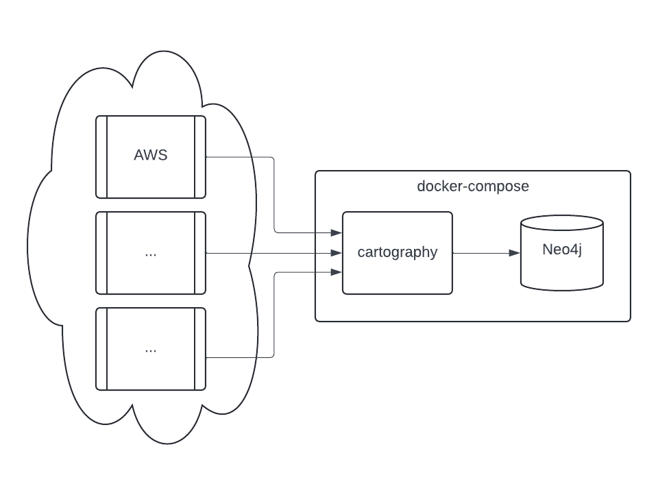
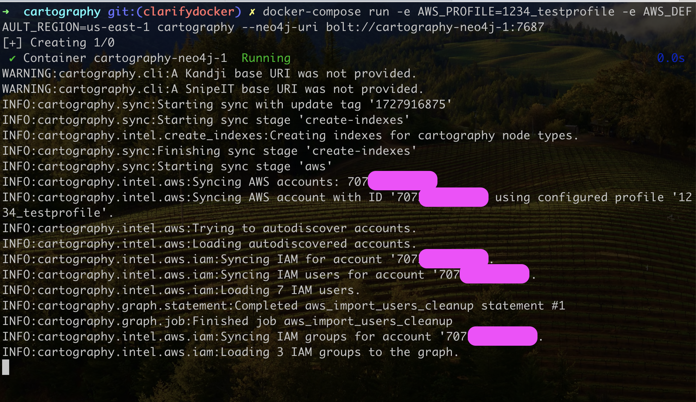
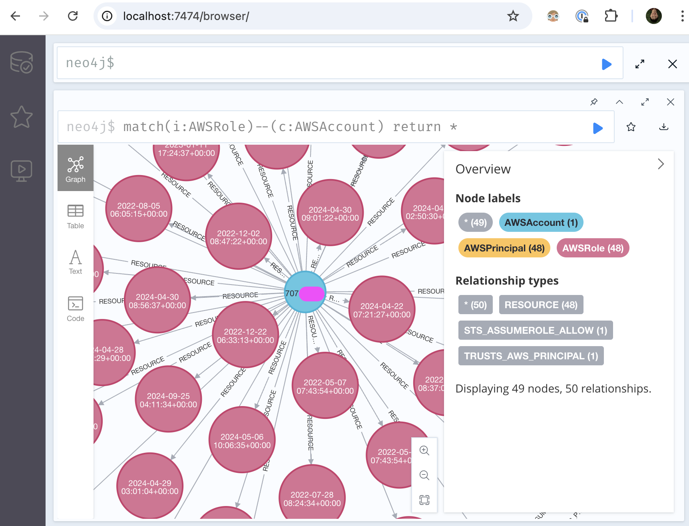
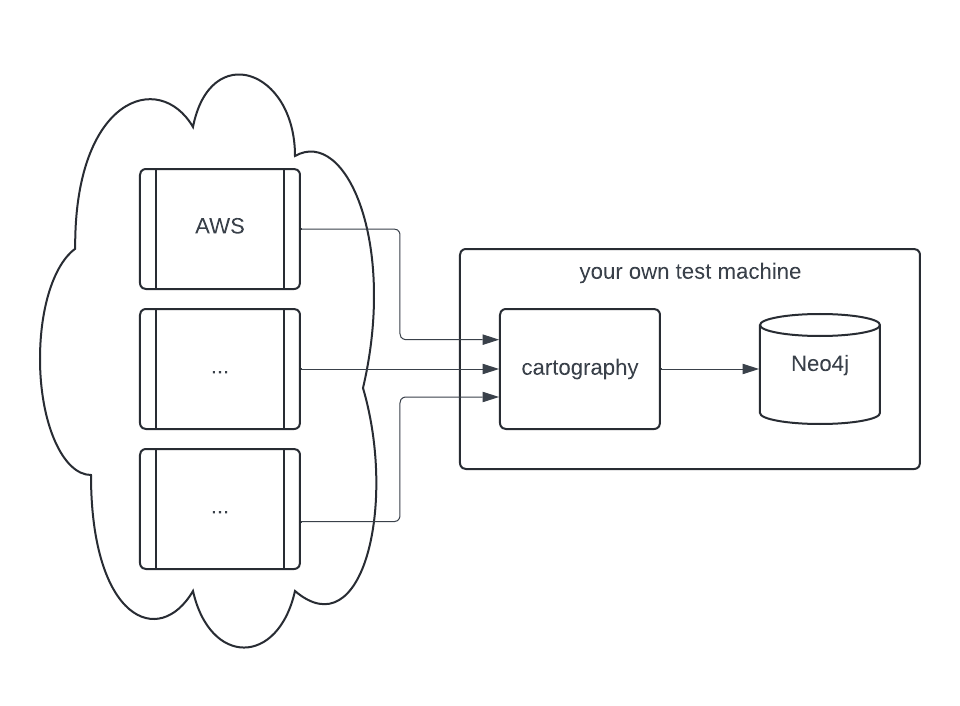
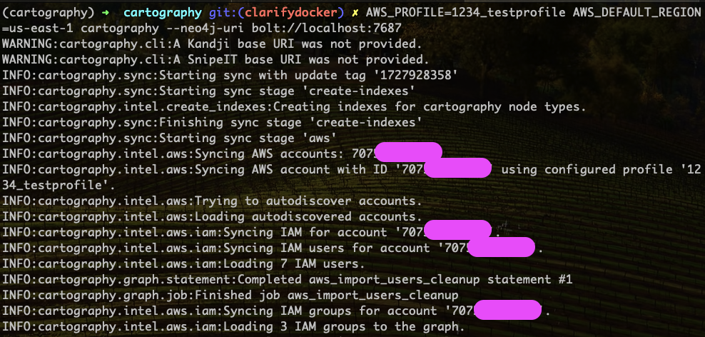

Quick start: Install and Run Cartography On Test Machine¶
Time to set up a test machine to run Cartography.
Option 1: Run docker-compose (preferred)¶
This is the quickest way to get started: you will run a cartography cron job and a Neo4j docker container on your machine to pull data from AWS.

Clone the Cartography repo to your machine.
git clone git@github.com:cartography-cncf/cartography.gitor
git clone https://github.com/cartography-cncf/cartographyStart up the Neo4j graph database.
cd cartography docker-compose up -d
If this command errors out with permission problems, you may need to configure your Docker Desktop/Rancher Desktop/etc to use a different virtual machine volume setting: try virtiofs on Mac.
It may take a minute for the Neo4j container to spin up.
Configure and run Cartography.
In this example we will run Cartography on AWS with a profile called “1234_testprofile” and default region set to “us-east-1”.
docker-compose run \ -e AWS_PROFILE=1234_testprofile \ -e AWS_DEFAULT_REGION=us-east-1 \ cartography --neo4j-uri bolt://cartography-neo4j-1:7687
If you get a connection error like
ValueError: Cannot resolve address cartography-neo4j-1:7687, you may need to wait a bit for the Neo4j container to be ready. Rundocker psperiodically to check on it and then retry thedocker-compose run ..command.You will know it works when your terminal shows log messages displaying how many assets are being loaded to the graph:

Notes:
You can view a full list of Cartography’s CLI arguments by running
docker-compose run cartography --help.Refer to the configuration sections of the relevant intel modules - such as AWS, GCP, Azure, and others - to properly set up each data source. The instructions for configuring additional modules can be found in the sidebar menu under the “Intel Modules” section. This generally involves specifying environment variables to cartography, or making a config/credential file on the host available to the container.
You can pass in environment variables to the cartography container using the docker-compose format like this:
-e VARIABLE1 -e VARIABLE2=value2.You can make files available to the cartography container by editing the volumes in the docker-compose.yml file. See docker-compose documentation on how to do that.
cartography-neo4j-1is how the Cartography docker container knows how to reach the Neo4j container in docker-compose.AWS things
AWS_DEFAULT_REGIONmust be specified.The docker-compose.yml maps in
~/.aws/on your host machine to/var/cartography/.awsin the cartography container so that the container has access to AWS profile and credential files.You can use
--aws-requested-syncsto sync only specific AWS resources instead of all of them. This accepts a comma-separated list of resource identifiers. For example, to sync only EC2 instances, S3 buckets, and IAM resources:--aws-requested-syncs "ec2:instance,s3,iam". See AWS Configuration for the full list of available resources.
Run security frameworks against your graph.
docker-compose run --rm cartography cartography-rules run all --uri bolt://cartography-neo4j-1:7687 --neo4j-password-promptFull docs here.
View the graph.
You can view the graph while it is still syncing by visiting http://localhost:7474. Try a query like
match (i:AWSRole)--(c:AWSAccount) return *It should look like this:

Optional: If you want to configure the Neo4j container itself, you can do this via the
.composedirectory, which is git ignored. neo4j config, logs, etc are all located at.compose/neo4j/...Optional: You can supply additional environment variables via
docker-composelike this:# Temporarily disable bash command history set +o history # See the cartography github configuration intel module docs export GITHUB_KEY=BASE64ENCODEDKEY # You need to set this after starting neo4j once, and resetting # the default neo4j password, which is neo4j export NEO4j_PASSWORD=... # Reenable bash command history set -o history # Start cartography dependencies docker-compose up -d # Run cartography docker-compose run -e GITHUB_KEY -e NEO4j_PASSWORD cartography cartography --github-config-env-var GITHUB_KEY --neo4j-uri bolt://neo4j:7687 --neo4j-password-env-var NEO4j_PASSWORD --neo4j-user neo4j
Read on to see other things you can do with Cartography.
Option 2: manually run 2 containers¶
Run the Neo4j graph database container.
# Create a docker network so that cartography can talk to neo4j docker network create cartography-network # run the Neo4j graph database docker run \ --publish=7474:7474 \ --publish=7687:7687 \ --network cartography-network \ -v data:/data \ --name cartography-neo4j \ --env=NEO4J_AUTH=none \ neo4j:5-community
Refer to the Neo4j Docker official docs for more information.
Note that we are just playing around here on a test instance and have specified
--env=NEO4J_AUTH=noneto turn off authentication.If you experience very slow write performance using an ARM-based machine like an M1 Mac, see if using an ARM image helps. Neo4j keeps ARM builds here.
Configure and run Cartography.
See the configuration section of each relevant intel module to set up each data source. In this example we will use AWS.
This command runs cartography on an AWS profile called “1234_testprofile” on region us-east-1. We also expose the host machine’s ~/.aws directory to ~/var/cartography/.aws in the container so that AWS configs work.
docker run --rm \ --network cartography-network \ -v ~/.aws:/var/cartography/.aws/ \ -e AWS_PROFILE=1234_testprofile \ -e AWS_DEFAULT_REGION=us-east-1 \ cartography-cncf/cartography --neo4j-uri bolt://cartography-neo4j:7687
If things work, your terminal will look like this where you see log messages displaying how many assets are being loaded to the graph:
Notes:
You pass in environment variables to the cartography container using the docker format like this:
-e VARIABLE1 -e VARIABLE2=value2.AWS things
AWS_DEFAULT_REGIONmust be specified.Our docker-compose.yml maps in
~/.aws/on your host machine to/var/cartography/.awsin the cartography container, so the container has access to AWS profile and credential files.
You can view a full list of Cartography’s CLI arguments by running
docker run cartography-cncf/cartography --help.
Run security frameworks against your graph.
docker run --rm --network cartography-network cartography-cncf/cartography cartography-rules run all --uri bolt://cartography-neo4j:7687 --neo4j-password-promptFull docs here.
View the graph.
You can view the graph while it is still syncing by visiting http://localhost:7474. Try a query like
match (i:AWSRole)--(c:AWSAccount) return *It should look like this:
Read on to see other things you can do with Cartography.
Option 3: Native install¶
Do this if you prefer to install and manage all the dependencies yourself. Cartography should work on Linux, Mac, and Windows, but bear in mind we haven’t tested much on Windows so far.

Ensure that you have Python 3.13 set up on your machine.
Older versions of Python (3.10-3.12) may work but are not tested. Python 3.10 support will be removed in October 2026.
Run Neo4j graph database version 5.23 or higher. Cartography emits scoped subqueries (
CALL (var) { ... }) that earlier 5.x releases do not support.We recommend running Neo4j as a Docker container so that you save time and don’t need to install Java. Run
docker run --publish=7474:7474 --publish=7687:7687 -v data:/data --env=NEO4J_AUTH=none neo4j:5-community.Otherwise, if you prefer to install Neo4j from scratch,
Neo4j requires a JVM (JDK/JRE 17 or higher). One option is Amazon Coretto 17.
⚠️ Make sure you have the
JAVA_HOMEenvironment variable set. The following works for Mac OS:export JAVA_HOME=$(/usr/libexec/java_home)Go to the Neo4j download page, and download Neo4j Community Edition 5.23 or higher.
Install Neo4j.
⚠️ For local testing, you might want to turn off authentication via property
dbms.security.auth_enabledin file NEO4J_PATH/conf/neo4j.conf💡 If you leave authentication enabled, Neo4j uses the default credentials:
Username:
neo4jPassword:
neo4j(you will be prompted to change it on first login)
You can also provide credentials to Cartography via command-line flags or environment variables. For example:
export NEO4J_PASSWORD="your-password" cartography --neo4j-uri bolt://localhost:7687 --neo4j-user neo4j --neo4j-password-env-var NEO4J_PASSWORD
Install cartography with uv.
Cartography uses uv for development and CI. We recommend it for installation as well: it manages an isolated environment for you and is significantly faster than pip.
# Install uv if you don't have it (see https://docs.astral.sh/uv/getting-started/installation/ for alternatives). curl -LsSf https://astral.sh/uv/install.sh | sh # Install cartography as an isolated tool exposed on your PATH. uv tool install cartography
Use
uv tool upgrade cartographyto pull in new releases.If you prefer pip,
pip install cartographystill works inside a venv. See the Python packaging guide for venv setup withpyenv/pyenv-virtualenv.Configure your data sources.
See the configuration section of each relevant intel module for more details. In this example we will use AWS.
Run cartography.
For a specific AWS account defined as a separate profile in your AWS config file, set the
AWS_PROFILEenvironment variable, for example this command runs cartography on an AWS profile called “1234_testprofile” on region us-east-1.AWS_PROFILE=1234_testprofile AWS_DEFAULT_REGION=us-east-1 cartography --neo4j-uri bolt://localhost:7687For one account using the
defaultprofile defined in your AWS config file, runcartography --neo4j-uri bolt://localhost:7687For more than one AWS account, run
AWS_CONFIG_FILE=/path/to/your/aws/config cartography --neo4j-uri bolt://localhost:7687 --aws-sync-all-profiles
You can view a full list of Cartography’s CLI arguments by running
cartography --help.Tip
Use
--selected-moduleswith--helpto see only relevant options:cartography --selected-modules aws --helpshows only AWS-related options. See CLI documentation for shell autocompletion setup.If everything worked, the sync will pull data from your configured accounts and ingest data to Neo4j! This process might take a long time if your account has a lot of assets.

Run security frameworks against your graph.
cartography-rules run allFull docs here.
View the graph. You can view the graph while it is still syncing by visiting http://localhost:7474. Try a query like
match (i:AWSRole)--(c:AWSAccount) return *It should look like this:
Things to do next¶
Here’s some ideas to get the most out of Cartography:
View our Operations Guide for tips on running Cartography in production
Read our graph querying tutorial and schema to learn how to query the graph
Think of applications to build around it